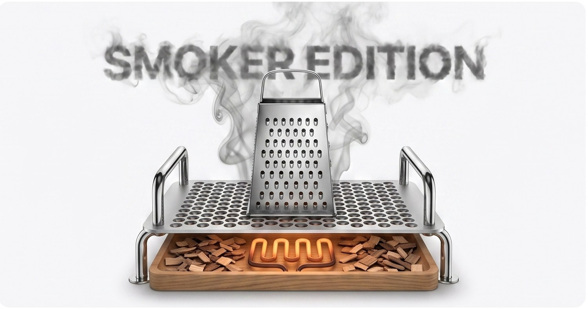

精選 · 真實的應用程式

MacSlowCooker REAL · OSS
免費 · Apache 2.0 · Apple Silicon 與 Intel
macOS Dock 圖示形式呈現 GPU / 溫度 / 風扇 / 電力，採用鍋子隱喻。浮動視窗、MRTG 風格 4 面板歷史、Prometheus 匯出器、PNG 匯出。真實的軟體。
從 GitHub 取得 支援 →配件 · 概念仿諷

Mac Studio 專用
Cooking Plate
Mac Studio (M1/M2/M3 Max · Ultra)
你的 Mac Studio。現在是烹飪電器。
售價 NT$ 2,990 起



Mac Pro 專用
Smoker Edition
Mac Pro (2019, 2023 M2 Ultra)
起司刨絲器，終於有意義了。
售價 NT$ 12,990 起
關於本商店。 以上列出的所有配件皆為仿諷概念。它們並不作為實體產品存在，也不販售。Apple 與本系列無關。所示溫度與時間是 MacSlowCooker（真實應用程式）在實際 Mac 硬體上執行時的實測值 — 我們只是把它包裝成像烹飪電器產品線一樣。請真的不要在 Mac 上放廚具。
即將推出（也都不是真的）
MacBook Pro 加熱袖套 · Mac Pro 燻烤版 · iPad mini 鍋墊 · AirPort Time Capsule 真空慢煮浴